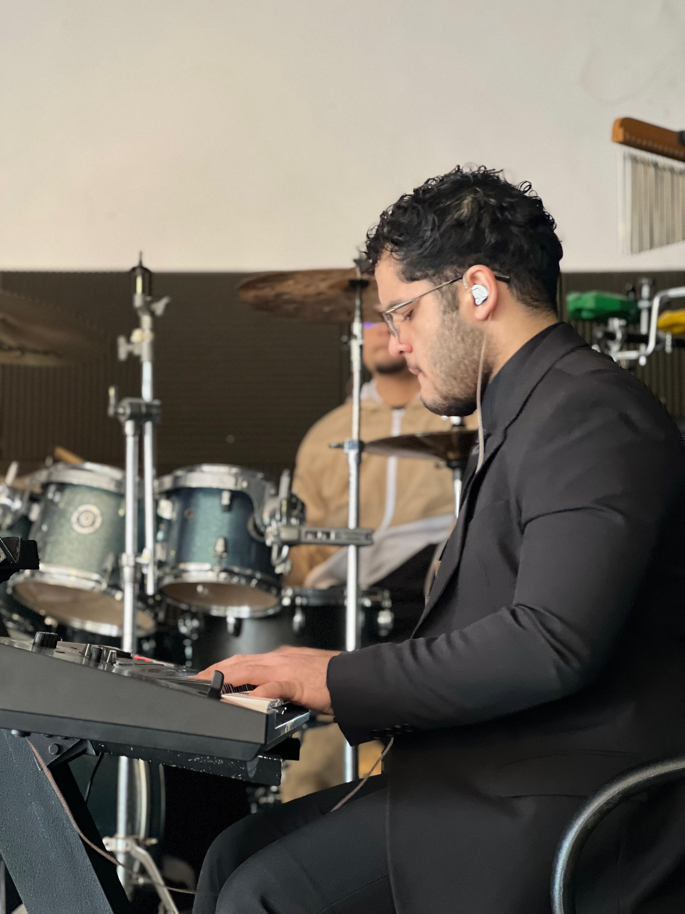
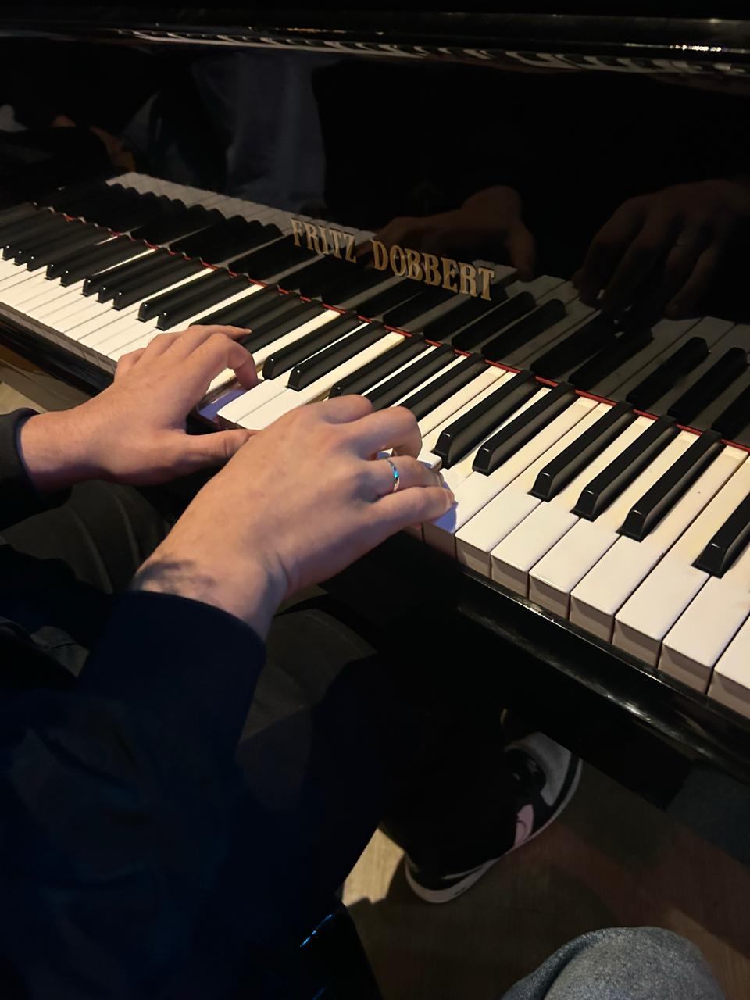
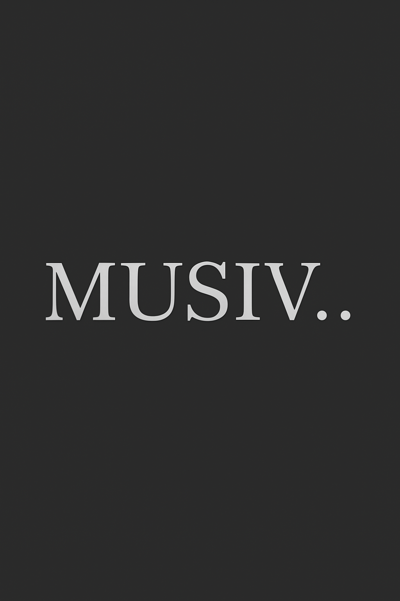

SOBRE MIM
A música sempre fez parte do meu mundo. Meus pais regiam o coral da igreja, então crescer cercado por ensaios, vozes e instrumentos era algo natural para mim. Eu e meu irmão vivíamos fascinados por tudo aquilo: pelas melodias, pelos instrumentos e pelo ambiente musical que sempre esteve presente no meu cotidiano, desde cedo a música foi uma companhia constante.


TECLADO
Durante a pandemia, quando tudo parecia parado e a vida estava em completa inércia, minha mãe decidiu me colocar em um curso de teclado. No começo, eu não gostei muito da ideia — era algo novo, e eu ainda não tinha criado uma conexão com o instrumento. Mas, com o tempo, as aulas começaram a despertar algo em mim. Aos poucos, fui me encantando, e aquilo que era apenas uma atividade se transformou em uma paixão verdadeira.
O MUSIV..
O MUSIV nasceu justamente dessa trajetória com a música e do desejo de compartilhar esse universo com outras pessoas. Percebi que aprender música pode ser muito mais simples, divertido e acessível do que parece. Então, tive a ideia de criar um site que ajudasse iniciantes a aprenderem teoria musical de forma clara, leve e interativa. Um lugar onde qualquer pessoa, mesmo sem experiência, pudesse começar sua jornada musical e acompanhar sua evolução. O MUSIV é a união da minha história com a vontade de tornar a música mais próxima de todos.
